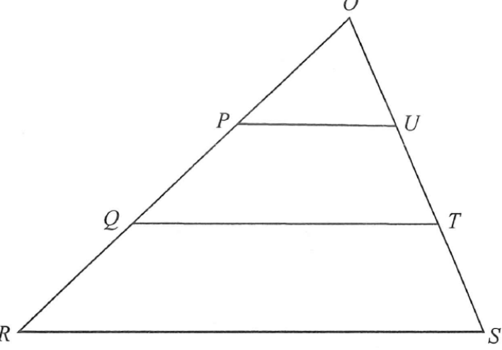

幾何 · 相似三角形與面積比

因 $PU\parallel QT\parallel RS$，故三個三角形對應角相等：
$$\triangle OPU\sim\triangle OQT\sim\triangle ORS$$
由 $OP=PQ=QR$ 得 $OP:OQ:OR=1:2:3$，故
$$PU:QT:RS=1:2:3$$
$$[\triangle OPU]:[\triangle OQT]:[\triangle ORS]=1:4:9$$
$$[PQTU]=4-1=3,\qquad[QRST]=9-4=5$$
$$\therefore\ [PQTU]:[QRST]=3:5$$
答案 C。選項 D 是誤用邊比 $2:3$ 的平方。